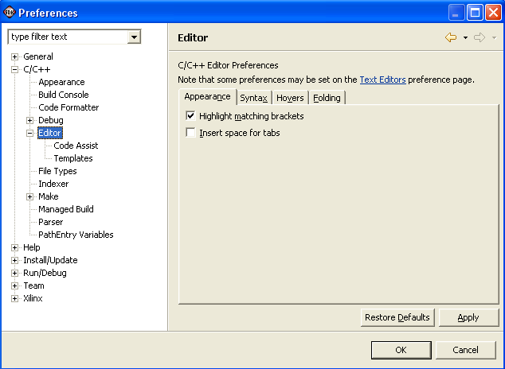

General preferences
You can customize the appearance of the C/C++ editor on the General page of the Preferences window.

- Highlight matching brackets
- When the cursor is beside a bracket, the matching
bracket is highlighted.
- Insert space for tabs
- Inserts a space instead of a tab character when you press Tab.

Coding aids

Customizing the C/C++ editor

C/C++ editor preferences